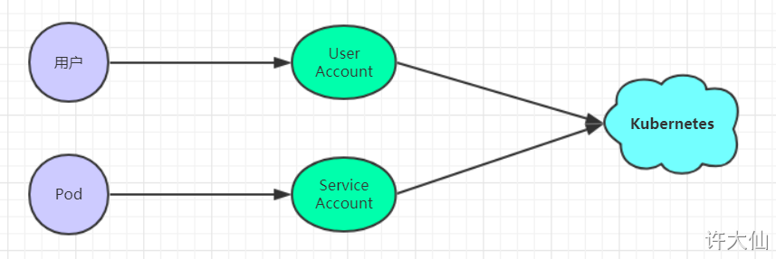
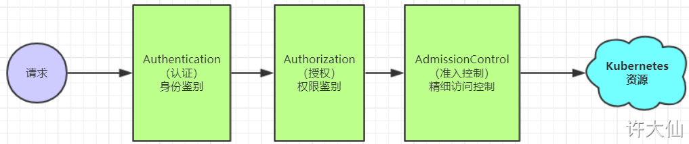
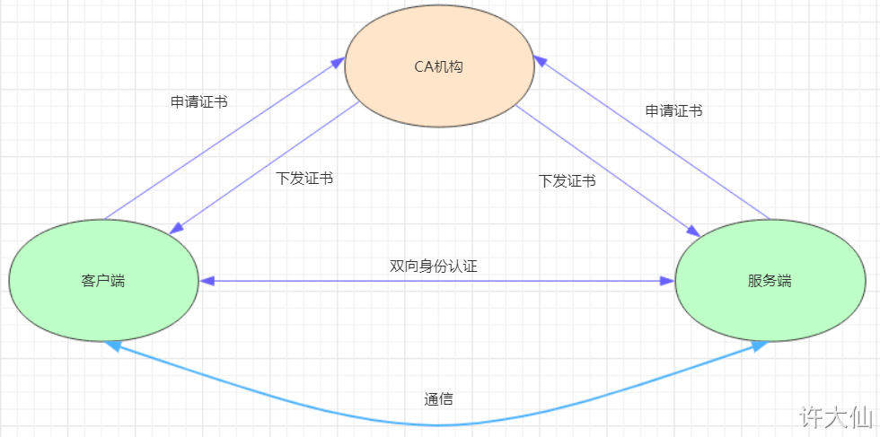
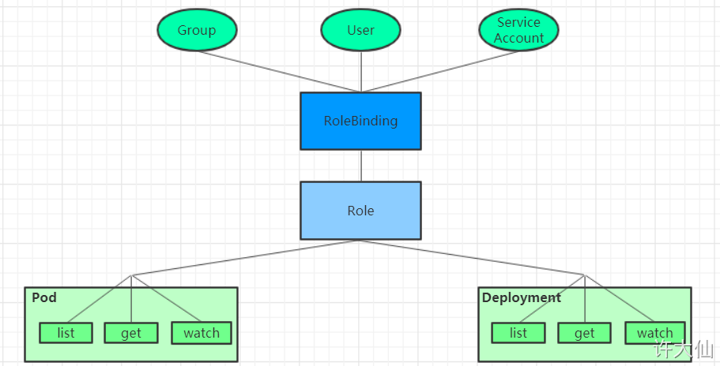

K8S学习笔记（十五）- K8S的安全认证
访问控制概述
概述
kubernetes作为一个分布式集群的管理工具，保证集群的安全性是其一个重要的任务。所谓的安全性其实就是保证对kubernetes的各种客户端进行认证和授权操作
客户端
在kubernetes集群中，客户端通常由两类
- User Account：一般是独立于kubernetes之外的其他服务管理的用户账号
- Service Account：kubernetes管理的账号，用于为Pod的服务进程在访问kubernetes时提供身份标识。

认证、授权和准入控制
API Server是访问和管理资源对象的唯一入口。
任何一个请求访问API Server，都要经过下面的三个流程
- Authentication（认证）：身份鉴别，只有正确的账号才能通过认证
- Authorization（授权）：判断用户是否有权限对访问的资源执行特定的动作
- Admission Control（注入控制）：用于补充授权机制以实现更加精细的访问控制功能

认证管理
kubernetes的客户端身份认证方式
kubernetes集群安全的关键点在于如何识别并认证客户端身份，它提供了3种客户端身份认证方式
- HTTP Base认证
- 通过用户名+密码的方式进行认证
- 这种方式是把“用户名:密码”用BASE64算法进行编码后的字符串放在HTTP请求中的Header的Authorization域里面发送给服务端。服务端收到后进行解码，获取用户名和密码，然后进行用户身份认证的过程
- HTTP Token认证
- 通过一个Token来识别合法用户
- 这种认证方式是用一个很长的难以被模仿的字符串–Token来表明客户端身份的一种方式。每个Token对应一个用户名，当客户端发起API调用请求的时候，需要在HTTP的Header中放入Token，API Server接受到Token后会和服务器中保存的Token进行比对，然后进行用户身份认证的过程
- HTTPS证书认证
- 基于CA根证书签名的双向数字证书认证方式
- 这种认证方式是安全性最高的一种方式，但是同时也是操作起来最麻烦的一种方式

HTTPS认证过程
- 证书申请和下发：HTTPS通信双方的服务器向CA机构申请证书，CA机构发根证书、服务端证书及私钥给申请者
- 客户端和服务器的双向认证
- 客户端向服务端发起请求，服务端下发自己的证书给客户端。客户端收到证书后，通过私钥解密证书，在证书中获取服务端的私钥。客户端利用服务器端的公钥认证证书中的信息，如果一致，则认可这个服务器
- 客户端发送自己的证书给服务器端，服务端接收到证书后，通过私钥解密证书。在证书中获取客户端的公钥，并用该公钥认证证书信息，确认客户端是否合法
- 服务器端和客户端进行通信
- 服务器端和客户端协商好加密方案后，客户端会产生一个随机的私钥并加密，然后发送到服务器端
- 服务器端接收到这个私钥后，双方接下来通信的所有内容都通过该随机私钥加密
总结
kubernetes允许同时配置多种认证方式，只要其中任意一种方式认证通过即可
授权管理
概述
授权发生在认证成功之后，通过认证就可以知道请求用户是谁，然后kubernetes会根据事先定义的授权策略来决定用户是否有权限访问，这个过程就称为授权
每个发送到API Server的请求都带上了用户和资源的信息：比如发送请求的用户、请求的路径、请求的动作等，授权就是根据这些信息和授权策略进行比较，如果符合策略，则认为授权通过，否则会返回错误
API Server目前支持的几种授权策略
- AlwaysDeny：表示拒绝所有请求，一般用于测试
- AlwaysAllow：允许接收所有的请求，相当于集群不需要授权流程（kubernetes默认的策略）
- ABAC：基于属性的访问控制，表示使用用户配置的授权规则对用户请求进行匹配和控制
- Webhook：通过调用外部REST服务对用户进行授权
- Node：是一种专用模式，用于对kubelet发出的请求进行访问控制
- RBAC：基于角色的访问控制（kubeadm安装方式下的默认选项）
RBAC
概述
RBAC（Role Based Access Control）：基于角色的访问控制，主要是在描述一件事情：给哪些对象授权了哪些权限
RBAC涉及到了下面几个概念：
- 对象：User、Groups、ServiceAccount
- 角色：代表着一组定义在资源上的可操作的动作（权限）的集合
- 绑定：将定义好的角色和用户绑定在一起

RBAC还引入了4个顶级资源对象
- Role、ClusterRole：角色，用于指定一组权限
- RoleBinding、ClusterRoleBinding：角色绑定，用于将角色（权限的集合）赋予给对象
Role、ClusterRole
一个角色就是一组权限的集合，这里的权限都是许可形式的（白名单）
Role的资源清单文件:
1 | # Role只能对命名空间的资源进行授权，需要指定namespace |
ClusterRole的资源清单文件:
1 | # ClusterRole可以对集群范围内的资源、跨namespace的范围资源、非资源类型进行授权 |
rules中的参数说明：
- apiGroups：
- 支持的API组列表。
- “”,”apps”,”autoscaling”,”batch”
- resources：
- 支持的资源对象列表。
- “services”,”endpoints”,”pods”,”secrets”,”configmaps”,”crontabs”,”deployments”,”jobs”,”nodes”,”rolebindings”,”clusterroles”,”daemonsets”,”replicasets”,”statefulsets”,”horizontalpodautoscalers”,”replicationcontrollers”,”cronjobs”
- verbs：
- 对资源对象的操作方法列表。
- “get”, “list”, “watch”, “create”, “update”, “patch”, “delete”, “exec”
RoleBinding、ClusterRoleBinding
角色绑定用来把一个角色绑定到一个目标对象上，绑定目标可以是User、Group或者ServiceAccount
RoleBinding的资源清单文件:
1 | # RoleBinding可以将同一namespace中的subject对象绑定到某个Role下，则此Subject具有该Role定义的权限 |
ClusterRoleBinding的资源清单文件:
1 | # ClusterRoleBinding在整个集群级别和所有namespaces将特定的subject与ClusterRole绑定，授予权限 |
RoleBinding引用ClusterRole进行授权
RoleBinding可以引用ClusterRole，对属于同一命名空间内ClusterRole定义的资源主体进行授权
一种很常用的做法是，集群管理员为集群范围预定义好一组角色（ClusterRole），然后在多个命名空间中重复使用这些ClusterRole。
这样可以大幅度提高授权管理工作效率，也使得各个命名空间下的基础性授权规则和使用体验保持一致。
1 | # 虽然authorization-clusterrole是一个集群角色，但是因为使用了RoleBinding |
RBAC实战
需求
创建一个只能管理dev命名空间下Pods资源的账号
创建账号
1 | 创建证书 |
创建Role和RoleBinding，为devman授权
创建dev-role.yaml文件，内容如下：
1 | apiVersion: rbac.authorization.k8s.io/v1 |
1 | 创建Role和RoleBinding |
切换账户，再次验证
1 | 切换账户到devman |
准入控制
概述
通过了前面的认证和授权之后，还需要经过准入控制通过之后，API Server才会处理这个请求
准入控制是一个可配置的控制器列表，可以通过在API Server上通过命令行设置选择执行哪些注入控制器
1 | --enable-admission-plugins=NamespaceLifecycle,LimitRanger,ServiceAccount,PersistentVolumeLabel,DefaultStorageClass,ResourceQuota,DefaultTolerationSeconds |
只有当所有的注入控制器都检查通过之后，API Server才会执行该请求，否则返回拒绝。
当前可配置的Admission Control（准入控制）
- AlwaysAdmit：允许所有请求。
- AlwaysDeny：禁止所有请求，一般用于测试。
- AlwaysPullImages：在启动容器之前总去下载镜像。
- DenyExecOnPrivileged：它会拦截所有想在Privileged Container上执行命令的请求。
- ImagePolicyWebhook：这个插件将允许后端的一个Webhook程序来完成admission controller的功能。
- Service Account：实现ServiceAccount实现了自动化。
- SecurityContextDeny：这个插件将使用SecurityContext的Pod中的定义全部失效。
- ResourceQuota：用于资源配额管理目的，观察所有请求，确保在namespace上的配额不会超标。
- LimitRanger：用于资源限制管理，作用于namespace上，确保对Pod进行资源限制。
- InitialResources：为未设置资源请求与限制的Pod，根据其镜像的历史资源的使用情况进行设置。
- NamespaceLifecycle：如果尝试在一个不存在的namespace中创建资源对象，则该创建请求将被拒 绝。当删除一个namespace时，系统将会删除该namespace中所有对象。
- DefaultStorageClass：为了实现共享存储的动态供应，为未指定StorageClass或PV的PVC尝试匹配默认StorageClass，尽可能减少用户在申请PVC时所需了解的后端存储细节。
- DefaultTolerationSeconds：这个插件为那些没有设置forgiveness tolerations并具有notready:NoExecute和unreachable:NoExecute两种taints的Pod设置默认的“容忍”时间，为5min。
- PodSecurityPolicy：这个插件用于在创建或修改Pod时决定是否根据Pod的security context和可用的 PodSecurityPolicy对Pod的安全策略进行控制